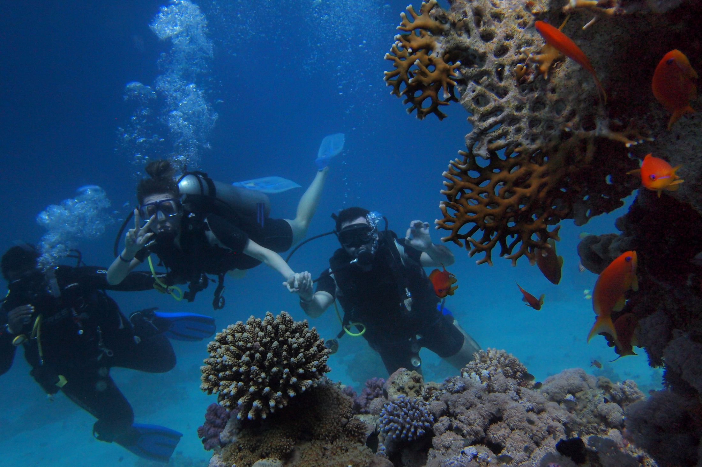

01 · Før rejsen
Forstå det, før du gør det.
Grundlæggende teori i dit eget tempo: udstyr, vejrtrækning, tryk, kommunikation og sikkerhed.

Vejen til certifikat
Du bliver ikke kastet ud på dybt vand. Viden, ro og erfaring bygges op i den rækkefølge, du har brug for.
Forløbet går fra teori i dit eget tempo til træning i beskyttet vand og fire dyk i åbent vand. Hvert trin forbereder det næste.
Fire kursustrin i læringsfasen
Grundlæggende teori i dit eget tempo: udstyr, vejrtrækning, tryk, kommunikation og sikkerhed.
Du lærer udstyret at kende og øver vejrtrækning, opdrift, maske og regulator med instruktøren tæt på.
Fire dyk samler teori og træning i virkelige omgivelser med en kontrolleret progression.
Når kravene er gennemført, har du adgang til at bygge erfaring videre i dit eget tempo.
Den vigtigste sætning
Du skal være villig til at lære. Det er almindeligt at være spændt på vejrtrækning, udstyr eller dybde. Samtalen giver plads til spørgsmålene, før du vælger.
Book en introduktionssamtale